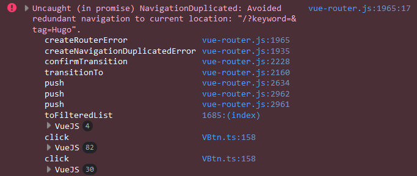
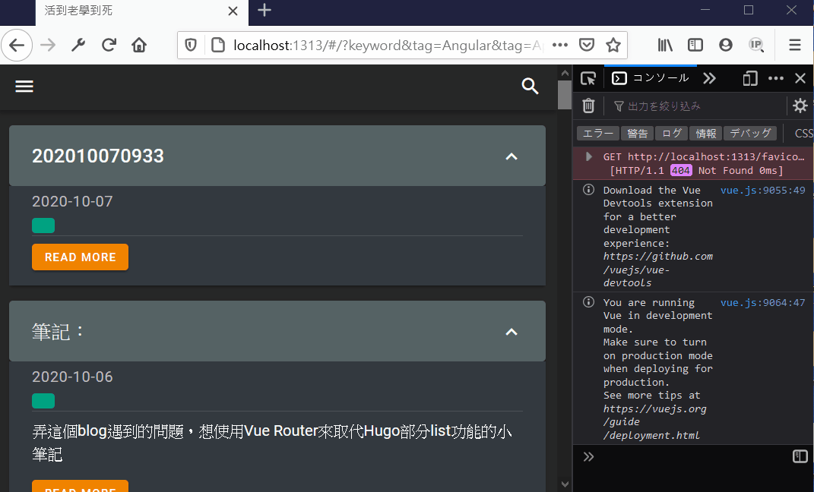

弄這個blog遇到的問題，想使用Vue Router來取代Hugo部分list功能的小筆記
在Hugo的情況是會產生出新的靜態頁面
http://localhost:1313/tags/Hugo/
為了實現SPA，想法是取得Vue Router的Query來進行搜尋，求的是url後面那段query string
http://localhost:1313/#/?tag=Hugo
為了在任何location都能回到'/'，所以使用method來進行回首頁的動作來搜尋本blog的貼文
...
methods: {
toFilteredList () {
this.$router.push({
path: '/',
query: {
keyword: this.keyword,
category: this.selectedCategories,
tag: this.selectedTags
}
})
},
}
但是如果目標的path和當前的一樣，會無法刷新，產生以下error

畢竟路徑一樣呢
在stackoverflow看到了這篇https://stackoverflow.com/questions/41301099/do-we-have-router-reload-in-vue-router
裡面不少人提起了router.go()，但不論是用window的go還是Vue Router的router.go()，都是瀏覽器reload整個頁面，不符合需求， 畢竟當初只是想傳值而已，所以要用Vue Router解決的話必然會是push與replace，不會是go
是最後的解決方法是改為router.history.push，這樣不論怎麼call，當前頁還是頁面，都不會跳轉，但是$route是確確實實更新了
...
methods: {
toFilteredList () {
if (this.$route.path == '/') {
this.$router.history.push({
query: {
keyword: this.keyword,
category: this.selectedCategories,
tag: this.selectedTags
}
})
}
else {
this.$router.push({
path: '/',
query: {
keyword: this.keyword,
category: this.selectedCategories,
tag: this.selectedTags
}
})
}
},
再來只要到components中使用watch來監控route，就能去拿到新的query string了
const List = {
...
computed: {
getQuery () {
return this.$route.query
}
},
watch: {
getQuery (to, from) {
console.log(to)
}
},
}
結果姑且算是理想
